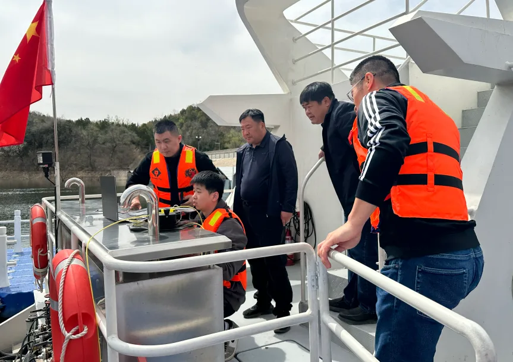
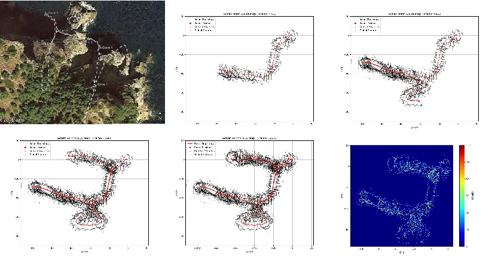
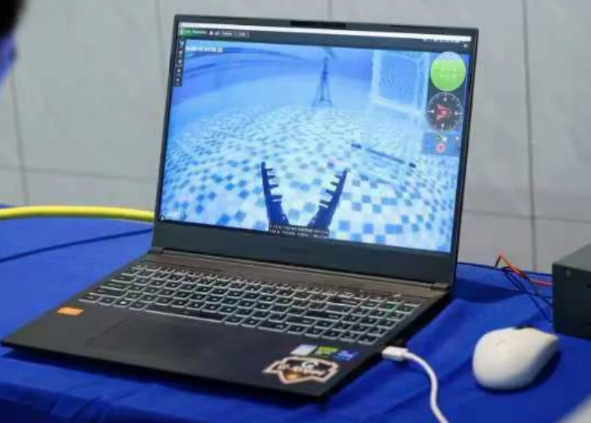
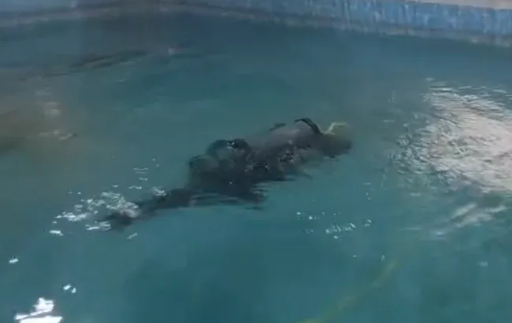

Depth, hovering and operating duration quickly separate platform families.
水深、悬停与作业时长会快速区分平台系列。
Applications
应用场景
Scenes are organized by operating depth, access space, target, stability and payload needs.
场景按作业水深、进入空间、目标、稳定性与挂载需求组织。
Use site conditions to narrow platform fit before comparing hardware.
先用现场条件缩小平台范围，再进入硬件比较。

Matching Logic
匹配逻辑
Depth, hovering and operating duration quickly separate platform families.
水深、悬停与作业时长会快速区分平台系列。
Open water, culverts, shafts and gate slots require different access logic.
开阔水域、涵洞、井室与闸槽对应不同进入逻辑。
Routine review, precision observation and experiment support require different stability levels.
常规复核、精细观测与试验支持需要不同稳定性等级。
Some missions need only video; others require sonar, sensing, payloads or field support.
有些任务只需视频，有些需要声呐、传感、挂载或现场支持。

Scene 01
场景 01
Low visibility, piles, cables, sediment or path-support needs move the task beyond basic video review.
低能见度、桩基、缆线、淤积或路径辅助需求会超出基础视频复核。
Delivery: platform, sensing module and mission support. Product: SeaLeopard.
交付：平台、感知模块与任务支持。产品：SeaLeopard。

Scene 02
场景 02
These tasks require stable close viewing, depth hold and condition confirmation without diver-first deployment.
任务需要稳定近距观察、定深控制与状态确认，减少对潜水员先行进入的依赖。
Delivery: purchase or mission support, depending on task frequency.
交付：按任务频次选择采购或任务支持。

Scene 03
场景 03
These missions require fine attitude control, repeatable response and stable target alignment.
任务需要精细姿态控制、可重复响应与稳定目标对准。
Delivery: rental, test support or project expansion around the experiment setup.
交付：围绕试验装置提供租赁、测试支持或项目扩展。

Scene 04
场景 04
Fast deployment and low operating threshold matter more than heavy payload capacity.
快速部署和低操作门槛比重型挂载能力更重要。
Delivery: rental or short mission support for pilot judgement and validation.
交付：租赁或短期任务支持，用于先导判断与验证。

Scene 05
场景 05
Culverts, gate slots, shafts, box channels and tanks prioritize compact entry over broad-water mobility.
涵洞、闸槽、井室、箱涵与罐体优先考虑紧凑进入，而非开阔水域机动性。
Delivery: portable inspection support, shallow anomaly review and light module expansion.
交付：便携巡检支持、浅水异常复核与轻量模块扩展。
Start with depth, entry size, target and payload expectations.
从水深、入口尺寸、目标和挂载预期开始。